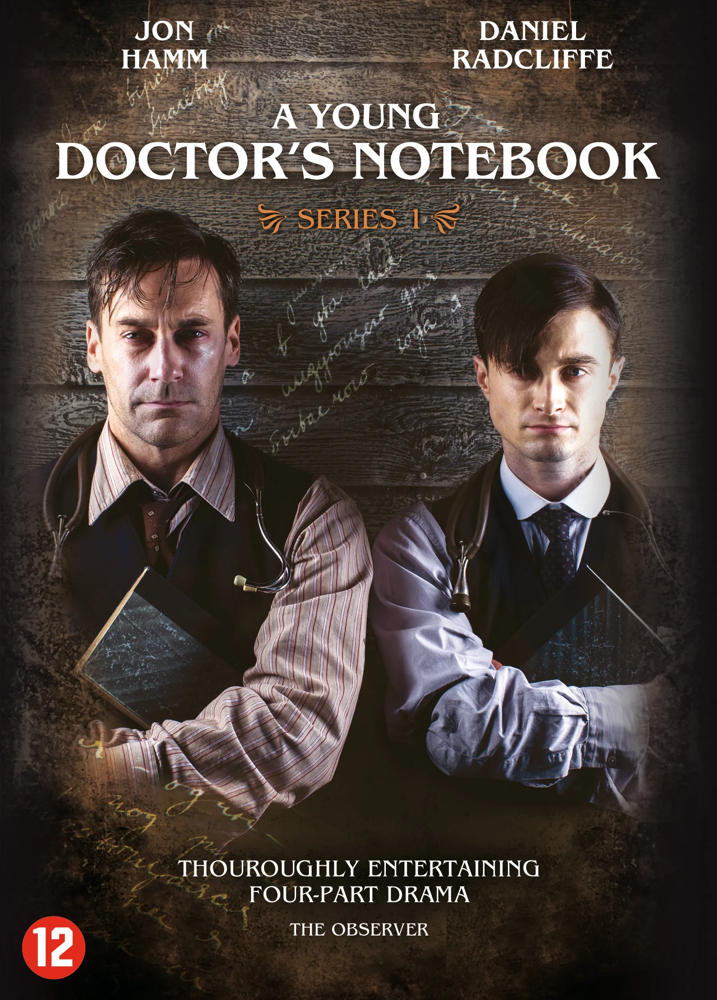
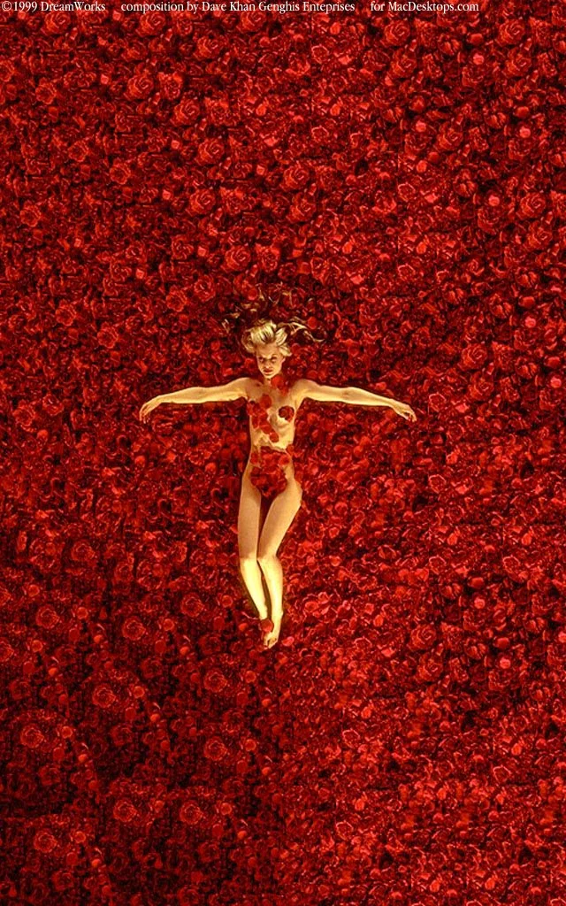

Доброго времени суток, программисты SD.CODE!
Представляю вам лэндинг на тему: "Мои любимые фильмы и сериалы"
P.s. выбрал неочевидные на мой взгляд

Сериал "Записки юного врача"
В неспокойное революционное время юный врач Бомгард Владимир прибыл в маленькую деревушку, где принялся лечить местных
жителей. Главному герою сериала приходится весьма нелегко, ведь он вынужден сталкиваться с трудностями своей профессии,
а также постоянными суевериями своих пациентов

Фильм "Красота по-американски"
Лестер Бернэм переживает кризис среднего возраста. Его не уважают и не ценят на работе, а от счастливой семьи осталась
лишь видимость. У жены Кэролайн страстный роман с коллегой по работе, а угрюмая дочь-подросток Джейн увлечена соседским
парнем, побывавшим в психиатрической больнице...
Фильм "Убийца"
Безлюдные пустоши, по которым проходит граница между Мексикой и США, — это территория без правил, поле битвы между
мексиканскими наркокартелями и американскими спецслужбами. Агент ФБР Кейт Мэйсер, старается придерживаться собственных идеалов, хотя и начинает ощущать, что исход войны с наркотрафиком складывается не в пользу служителей закона